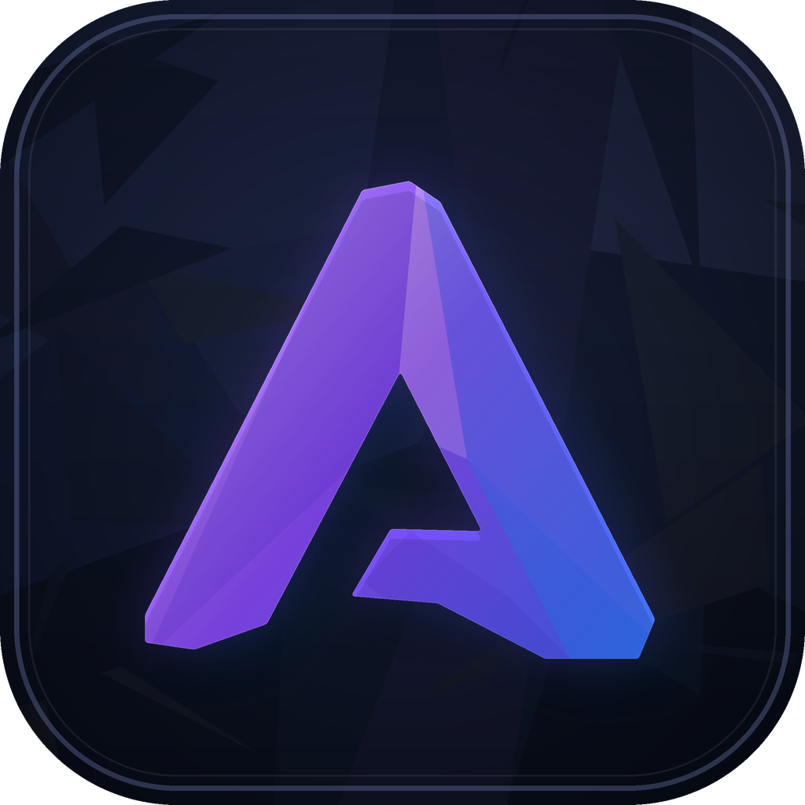

System
About
Anodex version, updates, and system information.

Anodex
Your private, local-first AI workspace.
Version 0.1.0
Development build
Run open models, work with project files, and keep conversations on your own computer.
Private by default Models, chats, projects, and settings stay
local unless you choose a connected service.
Software updates
You control every download and restart.
You’re up to date
Anodex 0.1.0 · Checked today
This computer
Detected for local model recommendations.
- Operating system
- Windows 11 · x64
- Memory
- 32 GB RAM
- Processor
- AMD Ryzen 7 7700X
- Graphics
- RTX 4070 · 12 GB
Technical detailsRuntime versions and local data location
- Electron
- 40.10.6
- Chromium
- 144.0.7559.110
- Node.js
- 22.22.0
- Platform
- win32 · x64
Local data folder
C:\Users\Owner\AppData\Roaming\Anodex